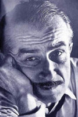

(1914 – 1970)

Roman ve öyküleriyle çağdaş Türk edebiyatında özgün bir yeri olan Orhan Kemal, toplumsal yaşamımızın değişim dönemlerini gerçekçi bir biçimde yapıtlarında dile getirmiş; aydınlık ve gerçekçi bakışıyla insan-toplum ilişkilerini ustalıkla yansıtmıştır.
Asıl adı Mehmet Raşit Öğütçü olan Orhan Kemal, 15 Eylül 1914'te Adana'nın Ceyhan ilçesinde doğdu. Babası 1920-1923 döneminde birinci TBMM'de milletvekilliği, 3 Mayıs 1920'de kurulan Bakanlar Kurulu'nda Adliye Bakanlığı yapan ve 26 Eylül 1930'da Adana'da Ahali Cumhuriyet Fırkası'nı kuran Abdülkadir Kemalî Bey'dir.
Partisinin kapatılması üzerine 1931'de Suriye'ye kaçan babasının yanına gidince yazar, orta son sınıftaki öğrenimini yarım bıraktı. Daha sonra burada bir basımevinde çalıştı. Bir yıl kadar Suriye ve Lübnan'da kaldı. 1932'de Türkiye'ye dönünce Adana'da çırçır fabrikalarında işçilik, dokumacılık, katiplik, ambar memurluğu yaptı. 5 Mayıs 1937'de evlendi. Nisan 1938'de kızı Yıldız doğdu. Aynı günlerde Niğde'de askerlik görevine başladı. Burada "yabancı rejimler lehine propaganda ve isyana tahrik etmek" suçundan yargılanarak 27 Ocak 1939'da beş yıl hüküm giydi. Kayseri, Adana ve Bursa cezaevlerinde yattı. 1940 yılı kışında Bursa Cezaevi'nde Nazım Hikmet'le tanıştı. Bu tanışma, onun sanat yaşamında dönüm noktası oldu. 26 Eylül 1943'te tahliye olunca Adana'ya döndü. Karataş'ta toprak taşıma işinde bir ay çalıştı. 14 Nisan 1944'te Devlet Demiryolları'nda mevsimlik hamal olarak çalıştı. Aynı yılın haziran ayında Güzel İzmir Nakliyat Ambarı'nda iş buldu. Bir süre sonra bu işten çıkarıldı. 13 Temmuz 1944'te oğlu Nazım doğdu.
1945 yılı yazında Kilis'e giderek kalan otuz beş günlük askerlik görevini tamamladı. Ardından Çorum'a sürgüne gönderildi. Babasının dönemin başbakanı Recep Peker'e telgraf çekmesi üzerine, 26 Ekim 1946'da bırakıldı. Adana'ya dönünce sebze taşımacılığı ve Verem Savaş Derneği'nde katiplik yaptı. Bir süre sonra işsiz kaldı. Aralık 1949'da üçüncü çocuğu Kemali doğdu. 17 Nisan 1950'de ailece İstanbul'a yerleştiler. Hayatının bu dönemi artık iyice zor olmaya başlamıştı. Evli, üç çocuklu ve işsiz bir adam olarak zaten içinde olan yazarlık hevesine dört elle sarılmaya başladı. İstanbul'da geçimini artık yazarlıkla sağlıyordu. Kasım 1957'de dördüncü çocuğu Işık doğdu. 7 Mart 1966'da bir ihbar üzerine iki arkadaşıyla birlikte tutuklandı. "Hücre çalışması ve komünizm propagandası" yaptıkları gerekçesiyle tevkif edilerek Sultanahmet Cezaevi'ne gönderildi. 7 Nisan'da Türk Edebiyatçılar Birliği, Gen-Ar Tiyatrosu'nda Orhan Kemal'in 30. sanat yılı nedeniyle bir jübile düzenledi. Toplantıda Melih Cevdet Anday, Yaşar Kemal ve James Baldwin birer konuşma yaptı. Bilirkişice verilen "suç teşkil eden bir cihet bulunmadığı hususundaki" rapor üzerine 13 Nisan 1966'da serbest bırakıldı. 17 Temmuz 1968'de bu davadan beraat etti. Bulgar Yazarlar Birliği'nin çağrısı üzerine gittiği Sofya'da, tedavi edilmekte olduğu hastanede 2 Haziran 1970'te öldü.
Edebiyatımızın en önemli romancılarından olan Orhan Kemal yazın yaşamına askerdeyken şiirle başladı. Romanlarında konuşma ağırlıklı, görsel yönü zengin bir anlatım dili kullandığı için Orhan Kemal'in romanları her zaman sinemaya uyarlanmaya en yatkın romanlar olarak bilindi ve zaten yazdığı romanların büyük bölümü çeşitli yönetmenler tarafından sinemaya ve televizyona uyarlandı.
Orhan Kemal Kardeş Payı ile 1958, Önce Ekmek'le de 1969 Sait Faik Hikaye Armağanı'nı; yine Önce Ekmek kitabıyla 1969 Türk Dil Kurumu Öykü Ödülü'nü kazandı. Öykü ve romanlarının yanı sıra film senaryoları da yazdı. 72. Koğuş, Murtaza, Eskici Dükkanı, Kardeş Payı adlı yapıtlarını oyunlaştırdı. İspinozlar oyununu yazdı. Bu oyunları çeşitli tiyatrolar tarafından sahnelendi. 72. Koğuş oyunuyla 1967'de Ankara Sanat Severler Derneği'nce "en iyi oyun yazarı" seçildi. Ailesi tarafından ölümünden sonra her yıl yazarın ölüm yıldönümünde verilmek üzere konulan "Orhan Kemal Roman Armağanı", ülkemizin en önemli roman ödülleri arasındadır.
Romanları: Baba Evi (1949), Avare Yıllar (1950), Murtaza (1952), Cemile (1952), Bereketli Topraklar Üzerinde (1954), Suçlu (1957), Devlet Kuşu (1958), Vukuat Var (1958), Gavurun Kızı (1959), Küçücük (1960), Dünya Evi (1960), El Kızı (1960), Hanımın Çiftliği (1961), Eskici ve Oğulları (1962) (Eskici Dükkanı adıyla: 1970), Gurbet Kuşları (1962), Sokakların Çocuğu (1963), Kanlı Topraklar (1963), Bir Filiz Vardı (1965), Müfettişler Müfettişi (1966), Yalancı Dünya (1966), Evlerden Biri (1966), Arkadaş Islıkları (1968), Sokaklardan Bir Kız (1968), Üç Kağıtçı (1969), Kötü Yol (1969), Kaçak (ö.s.-1970), Tersine Dünya (ö.s.-1986)